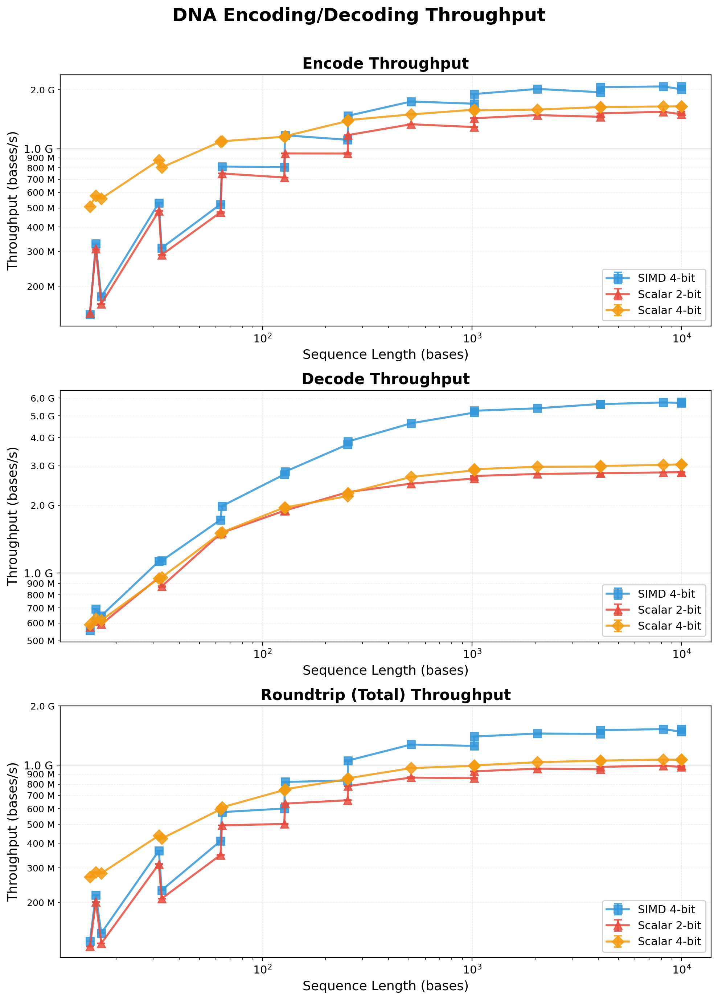

High-performance DNA/RNA sequence encoding and decoding using SIMD instructions with automatic fallback to scalar implementations.


Table of Contents
Features
- 4-bit encoding supporting all IUPAC nucleotide codes (16 standard + U for RNA)
- SIMD acceleration on x86_64 (SSSE3) and ARM64 (NEON)
- Automatic fallback to optimized scalar implementation
- Thread-safe pure functions with no global state
- 2:1 compression ratio compared to ASCII representation
- RNA support via U (Uracil) mapping to T
Installation
Add simdna to your Cargo.toml:
[dependencies]
simdna = "1.0"Or install via cargo:
cargo add simdnaIUPAC Nucleotide Codes
simdna supports the complete IUPAC nucleotide alphabet:
Standard Nucleotides
| Code | Meaning | Value |
|---|---|---|
| A | Adenine | 0x0 |
| C | Cytosine | 0x1 |
| G | Guanine | 0x2 |
| T | Thymine | 0x3 |
| U | Uracil (RNA → T) | 0x3 |
Two-Base Ambiguity Codes
| Code | Meaning | Value |
|---|---|---|
| R | A or G (purine) | 0x4 |
| Y | C or T (pyrimidine) | 0x5 |
| S | G or C (strong) | 0x6 |
| W | A or T (weak) | 0x7 |
| K | G or T (keto) | 0x8 |
| M | A or C (amino) | 0x9 |
Three-Base Ambiguity Codes
| Code | Meaning | Value |
|---|---|---|
| B | C, G, or T (not A) | 0xA |
| D | A, G, or T (not C) | 0xB |
| H | A, C, or T (not G) | 0xC |
| V | A, C, or G (not T) | 0xD |
Wildcards and Gaps
| Code | Meaning | Value |
|---|---|---|
| N | Any base | 0xE |
| - | Gap / deletion | 0xF |
| . | Gap (alternative) | 0xF |
Usage
use simdna::dna_simd_encoder::{encode_dna_prefer_simd, decode_dna_prefer_simd};
// Encode a DNA sequence with IUPAC codes
let sequence = b"ACGTNRYSWKMBDHV-";
let encoded = encode_dna_prefer_simd(sequence);
// The encoded data is 2x smaller (2 nucleotides per byte)
assert_eq!(encoded.len(), sequence.len() / 2);
// Decode back to the original sequence
let decoded = decode_dna_prefer_simd(&encoded, sequence.len());
assert_eq!(decoded, sequence);
// RNA sequences work seamlessly (U maps to T)
let rna = b"ACGU";
let encoded_rna = encode_dna_prefer_simd(rna);
let decoded_rna = decode_dna_prefer_simd(&encoded_rna, rna.len());
assert_eq!(decoded_rna, b"ACGT"); // U decodes as TInput Handling
- Case insensitive: Both
"ACGT"and"acgt"encode identically - Invalid characters: Non-IUPAC characters (X, digits, etc.) encode as gap (0xF)
- Decoding: Always produces uppercase nucleotides
Integration
simdna focuses exclusively on high-performance encoding/decoding, making it composable with any FASTA/FASTQ parser or custom format. This keeps the library lightweight and lets you choose the tools that fit your workflow.
Working with seq_io
seq_io is a fast FASTA/FASTQ parser. simdna works directly with its borrowed sequence data:
use seq_io::fasta::Reader;
use simdna::dna_simd_encoder::encode_dna_prefer_simd;
let mut reader = Reader::from_path("genome.fasta")?;
while let Some(record) = reader.next() {
let record = record?;
// seq_io provides &[u8] directly - no allocation needed
let encoded = encode_dna_prefer_simd(record.seq());
// ... use encoded data
}Working with noodles
noodles is a comprehensive bioinformatics I/O library:
use noodles::fasta;
use simdna::dna_simd_encoder::encode_dna_prefer_simd;
let mut reader = fasta::io::reader::Builder::default().build_from_path("genome.fasta")?;
for result in reader.records() {
let record = result?;
let encoded = encode_dna_prefer_simd(record.sequence().as_ref());
// ... use encoded data
}Working with rust-bio
rust-bio provides algorithms and data structures for bioinformatics:
use bio::io::fasta;
use simdna::dna_simd_encoder::encode_dna_prefer_simd;
let reader = fasta::Reader::from_file("genome.fasta")?;
for result in reader.records() {
let record = result?;
let encoded = encode_dna_prefer_simd(record.seq());
// ... use encoded data
}Zero-Copy Integration
simdna accepts &[u8] slices, enabling zero-copy integration with parsers. Avoid unnecessary allocations:
// ✓ Good: Work directly with borrowed data
let encoded = encode_dna_prefer_simd(record.seq());
// ✗ Avoid: Unnecessary allocation
let owned: Vec<u8> = record.seq().to_vec();
let encoded = encode_dna_prefer_simd(&owned);Most FASTA/FASTQ parsers provide sequence data as &[u8] or types that implement AsRef<[u8]>, which work directly with simdna’s API.
Platform Support
| Platform | SIMD | Fallback |
|---|---|---|
| x86_64 | SSSE3 | Scalar |
| ARM64 | NEON | Scalar |
| Other | - | Scalar |
Performance
- SIMD processes 16 nucleotides per iteration
- 2:1 compression ratio (4 bits per nucleotide vs 8 bits ASCII)
- Expected speedup: 4-8x over scalar code on modern CPUs

Benchmarks obtained on a Mac Studio with 32GB RAM and Apple M1 Max chip running macOS Tahoe 26.1 using the Criterion.rs statistics-driven micro-benchmarking library.
Testing
simdna employs a comprehensive testing strategy to ensure correctness and robustness:
Unit Tests
Run the standard test suite with:
cargo testThe unit tests cover:
- Encoding and decoding of all IUPAC nucleotide codes
- Case insensitivity handling
- Invalid character handling
- Odd and even length sequences
- Empty input edge cases
- SIMD and scalar implementation equivalence
Fuzz Testing
simdna uses cargo-fuzz for property-based fuzz testing to discover edge cases and potential bugs. The following fuzz targets are available:
| Target | Description |
|---|---|
roundtrip |
Verifies encode→decode produces consistent output |
valid_iupac |
Tests encoding of valid IUPAC sequences |
decode_robust |
Tests decoder resilience to arbitrary byte sequences |
boundaries |
Tests sequence length boundary conditions |
simd_scalar_equivalence |
Verifies SIMD and scalar implementations produce identical results |
Run fuzz tests with:
cargo +nightly fuzz run <target> -- -max_total_time=60License
MIT